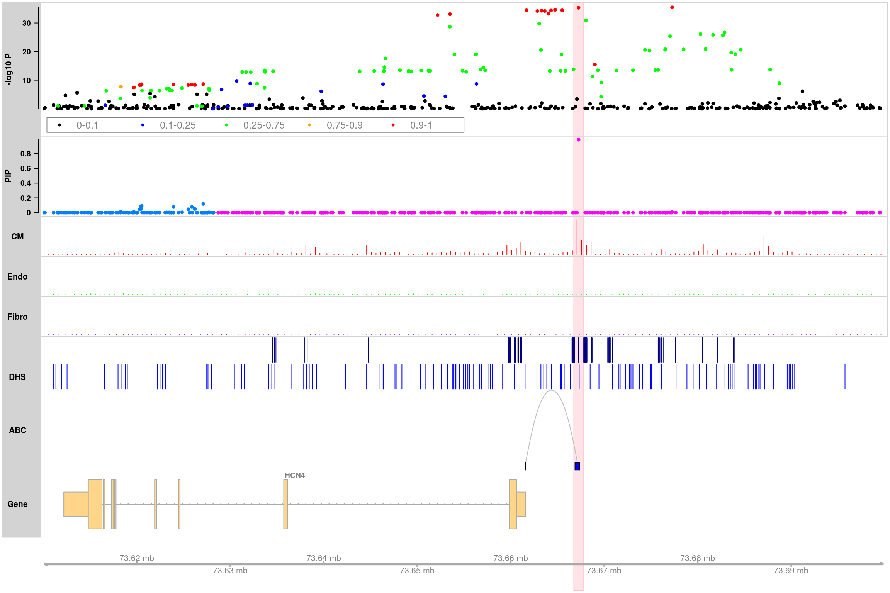

Last updated: 2023-10-20
Checks: 7 0
Knit directory: analysis_pipelines/
This reproducible R Markdown analysis was created with workflowr (version 1.7.0). The Checks tab describes the reproducibility checks that were applied when the results were created. The Past versions tab lists the development history.
Great! Since the R Markdown file has been committed to the Git repository, you know the exact version of the code that produced these results.
Great job! The global environment was empty. Objects defined in the global environment can affect the analysis in your R Markdown file in unknown ways. For reproduciblity it’s best to always run the code in an empty environment.
The command set.seed(20200524) was run prior to running
the code in the R Markdown file. Setting a seed ensures that any results
that rely on randomness, e.g. subsampling or permutations, are
reproducible.
Great job! Recording the operating system, R version, and package versions is critical for reproducibility.
Nice! There were no cached chunks for this analysis, so you can be confident that you successfully produced the results during this run.
Great job! Using relative paths to the files within your workflowr project makes it easier to run your code on other machines.
Great! You are using Git for version control. Tracking code development and connecting the code version to the results is critical for reproducibility.
The results in this page were generated with repository version 345fe19. See the Past versions tab to see a history of the changes made to the R Markdown and HTML files.
Note that you need to be careful to ensure that all relevant files for
the analysis have been committed to Git prior to generating the results
(you can use wflow_publish or
wflow_git_commit). workflowr only checks the R Markdown
file, but you know if there are other scripts or data files that it
depends on. Below is the status of the Git repository when the results
were generated:
Ignored files:
Ignored: .Rhistory
Ignored: .Rproj.user/
Untracked files:
Untracked: analysis/test_sldsc_splicingAnnot.Rmd
Untracked: code/compute_ldscore_generic_annot.sbatch
Untracked: code/extract_baselineLD_generic_annot.R
Untracked: code/ldsc_make_binary_annot_compute_ldscores_bedfiles.sbatch
Untracked: code/make_ldsc_binary_annots_from_bedfiles.R
Untracked: code/sldsc_annot_generic_baselineLD_separate.sbatch
Untracked: scripts/tmp.R
Unstaged changes:
Modified: analysis/index.Rmd
Modified: analysis/mapgen_torus_enrichment_heart_atlas.Rmd
Modified: analysis/mapgen_torus_susie_AF.Rmd
Modified: analysis/sldsc_example_GTEx_QTLs.Rmd
Modified: analysis/sldsc_pipeline.Rmd
Modified: code/extract_baselineLDv2.2_generic_annot.R
Modified: code/mapgen_trackplots.R
Modified: scripts/run_finemapping.R
Note that any generated files, e.g. HTML, png, CSS, etc., are not included in this status report because it is ok for generated content to have uncommitted changes.
These are the previous versions of the repository in which changes were
made to the R Markdown
(analysis/make_mapgen_trackplots.Rmd) and HTML
(docs/make_mapgen_trackplots.html) files. If you’ve
configured a remote Git repository (see ?wflow_git_remote),
click on the hyperlinks in the table below to view the files as they
were in that past version.
| File | Version | Author | Date | Message |
|---|---|---|---|---|
| Rmd | 345fe19 | kevinlkx | 2023-10-20 | wflow_publish("analysis/make_mapgen_trackplots.Rmd") |
| html | f780ba6 | kevinlkx | 2022-09-12 | Build site. |
| Rmd | a014500 | kevinlkx | 2022-09-12 | added ABC data |
| html | da4ec13 | kevinlkx | 2022-09-12 | Build site. |
| Rmd | adbc5ca | kevinlkx | 2022-09-12 | added ABC data |
| html | ff411be | kevinlkx | 2022-09-12 | Build site. |
| Rmd | 2b0f109 | kevinlkx | 2022-09-12 | updated trackplot with gtf based txdb |
| html | 76c1546 | kevinlkx | 2022-09-12 | Build site. |
| Rmd | cdf3452 | kevinlkx | 2022-09-12 | added txdb built from gtf |
| html | 45bb194 | kevinlkx | 2022-08-19 | Build site. |
| Rmd | 6e9c89d | kevinlkx | 2022-08-19 | added a note about counts data format |
| html | ca16d13 | kevinlkx | 2022-08-18 | Build site. |
| Rmd | f05e951 | kevinlkx | 2022-08-18 | added a tutorial for making track plots |
| Rmd | 5295f53 | kevinlkx | 2022-08-18 | added trackplot tutorials |
Required input data:
To make the trackplots, you will need to have the following packages
installed: GenomicFeatures, AnnotationDbi,
org.Hs.eg.db, GenomicInteractions,
Gviz, rtracklayer from Bioconductor.
Load R packages
library(GenomicFeatures) # Making and manipulating annotations
library(rtracklayer) # Import annotation data
library(Gviz) # R package used to visualize track plots
library(GenomicInteractions) # visualize HiC loops
library(AnnotationDbi) # match gene ID to gene symbol
library(org.Hs.eg.db) # match gene ID to gene symbol
library(mapgen)trackdata.dir <- "/project2/xinhe/shared_data/mapgen/example_data/trackplot"Load fine-mapping results.
finemapstats <- readRDS(system.file("extdata", "AF.finemapping.sumstats.rds", package = "mapgen"))
finemapstats <- process_finemapping_sumstats(finemapstats,
snp = 'snp',
chr = 'chr',
pos = 'pos',
pip = 'susie_pip',
pval = 'pval',
zscore = 'zscore',
cs = 'cs',
locus = 'locus',
pip.thresh = 0)Processing fine-mapping summary statistics ...Load genomic annotations and gene information
We included gene annotations (hg19) in the package, downloaded from GENCODE release 19.
genomic.annots <- readRDS(system.file("extdata", "genomic.annots.hg19.rds", package = "mapgen"))
gene.annots <- genomic.annots$genesLoad Promoter-capture HiC (PCHi-C) data from iPSC derived cardiomyocytes (CMs).
pcHiC <- readRDS(system.file("extdata", "pcHiC.CM.gr.rds", package = "mapgen"))
pcHiC <- pcHiC[pcHiC$gene_name %in% gene.annots$gene_name, ] # restrict to protein coding genesLoad ABC data
ABC <- data.table::fread(system.file("extdata", "heart_ventricle-ENCODE_ABC.tsv.gz", package = "mapgen"))
ABC <- process_ABC(ABC, full.element = TRUE)
ABC <- ABC[ABC$gene_name %in% gene.annots$gene_name, ] # restrict to protein coding genes
ABC$score <- ABC$score * 100 # scale to visualize the ABC scores
head(ABC, 3)GRanges object with 3 ranges and 4 metadata columns:
seqnames ranges strand | promoter_start promoter_end gene_name
<Rle> <IRanges> <Rle> | <integer> <integer> <character>
[1] chr1 888243-888743 * | 894679 894679 NOC2L
[2] chr1 908361-908861 * | 895966 895966 KLHL17
[3] chr1 908361-908861 * | 901876 901876 PLEKHN1
score
<numeric>
[1] 1.5224
[2] 1.7673
[3] 4.1100
-------
seqinfo: 23 sequences from an unspecified genome; no seqlengthsLoad H3K27ac and DHS bed files
H3K27ac_peaks <- rtracklayer::import(file.path(trackdata.dir, "H3K27ac.heart.concat.hg19.bed.gz"))
DHS_peaks <- rtracklayer::import(file.path(trackdata.dir, "FetalHeart_E083.DNase.hg19.narrowPeak.bed.gz"))Load ATAC data files. These data need to be in wig, bigWig/bw, bedGraph, or bam format.
CM_counts <- rtracklayer::import(file.path(trackdata.dir, "Cardiomyocyte.atac.hg19.bedGraph.gz"))
Endo_counts <- rtracklayer::import(file.path(trackdata.dir, "Endothelial.atac.hg19.bedGraph.gz"))
Fibro_counts <- rtracklayer::import(file.path(trackdata.dir, "Fibroblast.atac.hg19.bedGraph.gz"))You can build a TxDb database (“.sqlite”) using gene
annotations (GTF format) from GENCODE, and use to use the
TxDb database.
txdb <- makeTxDbFromGFF(file.path(trackdata.dir, 'gencode.v19.annotation.gtf.gz'), format = "gtf")
saveDb(txdb, file.path(trackdata.dir, "gencode.v19.annotation.gtf.sqlite"))If you are in Xin He lab at UChicago, you can access the gene
annotations and TxDb database in the directory:
/project2/xinhe/shared_data/gencode/ from RCC.
txdb <- loadDb("/project2/xinhe/shared_data/gencode/gencode.v19.annotation.gtf.sqlite")You will need the bigsnpr package if you want to
visualize R^2 between SNPs using a reference panel in
bigSNP object.
We provided a bigSNP object of the reference genotype
panel from the 1000 Genomes (1KG) European population.
If you are in the He lab at UChicago, you can load the
bigSNP object from RCC as below.
We use a reference genotype panel from European population (1KG).
library(bigsnpr) # loading reference genotype for LD calculationLoading required package: bigstatsrbigSNP <- bigsnpr::snp_attach(rdsfile = '/project2/xinhe/1kg/bigsnpr/EUR_variable_1kg.rds')FBM from an old version? Reconstructing..You should use `snp_save()`.Plot HCN4 locus in the genomic region “chr15:73610000-73700000”
Highlight top SNP (“rs7172038”)
counts <- list("CM" = CM_counts, "Endo" = Endo_counts, "Fibro" = Fibro_counts)
peaks <- list("H3K27ac" = H3K27ac_peaks, "DHS" = DHS_peaks)
loops <- list("ABC" = ABC)
track_plot(finemapstats,
region = "chr15:73610000-73700000",
gene.annots,
bigSNP = bigSNP,
txdb = txdb,
counts = counts,
peaks = peaks,
loops = loops,
genome = "hg19",
filter_loop_genes = "HCN4",
highlight_snps = "topSNP",
counts.color = c("red", "green", "purple"),
peaks.color = c("navy", "blue"),
loops.color = "gray",
genelabel.side = "above",
verbose = TRUE)463 snps included.
Color SNPs in PIP track by loci.
Adding CM track...
Adding Endo track...
Adding Fibro track...
Adding H3K27ac track...
Adding DHS track...
Adding ABC track...
Only show ABC loops linked to gene: HCN4
Making gene track object using txdb database ...
Highlight SNP: rs7172038
Making track plot ...
sessionInfo()R version 4.2.0 (2022-04-22)
Platform: x86_64-pc-linux-gnu (64-bit)
Running under: CentOS Linux 7 (Core)
Matrix products: default
BLAS/LAPACK: /software/openblas-0.3.13-el7-x86_64/lib/libopenblas_haswellp-r0.3.13.so
locale:
[1] LC_CTYPE=en_US.UTF-8 LC_NUMERIC=C LC_TIME=C
[4] LC_COLLATE=C LC_MONETARY=C LC_MESSAGES=C
[7] LC_PAPER=C LC_NAME=C LC_ADDRESS=C
[10] LC_TELEPHONE=C LC_MEASUREMENT=C LC_IDENTIFICATION=C
attached base packages:
[1] grid stats4 stats graphics grDevices utils datasets
[8] methods base
other attached packages:
[1] bigsnpr_1.11.6 bigstatsr_1.5.12
[3] mapgen_0.5.6 org.Hs.eg.db_3.15.0
[5] GenomicInteractions_1.32.0 InteractionSet_1.26.1
[7] SummarizedExperiment_1.28.0 MatrixGenerics_1.10.0
[9] matrixStats_0.63.0 Gviz_1.42.0
[11] rtracklayer_1.58.0 GenomicFeatures_1.50.4
[13] AnnotationDbi_1.60.0 Biobase_2.58.0
[15] GenomicRanges_1.48.0 GenomeInfoDb_1.34.9
[17] IRanges_2.32.0 S4Vectors_0.36.1
[19] BiocGenerics_0.44.0 workflowr_1.7.0
loaded via a namespace (and not attached):
[1] utf8_1.2.3 R.utils_2.12.2 tidyselect_1.2.0
[4] RSQLite_2.2.20 htmlwidgets_1.6.1 BiocParallel_1.32.5
[7] munsell_0.5.0 codetools_0.2-18 interp_1.1-3
[10] withr_2.5.0 colorspace_2.1-0 filelock_1.0.2
[13] highr_0.10 knitr_1.42 rstudioapi_0.14
[16] git2r_0.30.1 GenomeInfoDbData_1.2.9 bit64_4.0.5
[19] rprojroot_2.0.3 vctrs_0.5.2 generics_0.1.3
[22] xfun_0.37 biovizBase_1.46.0 timechange_0.2.0
[25] BiocFileCache_2.6.0 R6_2.5.1 bigassertr_0.1.6
[28] doParallel_1.0.17 bigsparser_0.6.1 AnnotationFilter_1.22.0
[31] bitops_1.0-7 cachem_1.0.6 DelayedArray_0.24.0
[34] assertthat_0.2.1 promises_1.2.0.1 BiocIO_1.8.0
[37] scales_1.2.1 nnet_7.3-17 googlesheets4_1.0.1
[40] gtable_0.3.1 processx_3.8.0 ensembldb_2.22.0
[43] rlang_1.0.6 flock_0.7 splines_4.2.0
[46] lazyeval_0.2.2 gargle_1.3.0 dichromat_2.0-0.1
[49] broom_1.0.3 plyranges_1.18.0 checkmate_2.1.0
[52] yaml_2.3.7 bigparallelr_0.3.2 modelr_0.1.10
[55] backports_1.4.1 httpuv_1.6.5 Hmisc_4.8-0
[58] tools_4.2.0 ggplot2_3.4.1 ellipsis_0.3.2
[61] jquerylib_0.1.4 RColorBrewer_1.1-3 Rcpp_1.0.10
[64] base64enc_0.1-3 progress_1.2.2 zlibbioc_1.44.0
[67] purrr_1.0.1 RCurl_1.98-1.10 ps_1.7.2
[70] prettyunits_1.1.1 rpart_4.1.16 deldir_1.0-6
[73] cowplot_1.1.1 haven_2.5.1 cluster_2.1.3
[76] fs_1.6.1 magrittr_2.0.3 data.table_1.14.6
[79] reprex_2.0.2 googledrive_2.0.0 whisker_0.4
[82] ProtGenerics_1.30.0 hms_1.1.2 evaluate_0.20
[85] XML_3.99-0.13 jpeg_0.1-10 readxl_1.4.2
[88] gridExtra_2.3 compiler_4.2.0 biomaRt_2.54.0
[91] tibble_3.1.8 crayon_1.5.2 R.oo_1.25.0
[94] htmltools_0.5.4 later_1.3.0 tzdb_0.3.0
[97] Formula_1.2-4 tidyr_1.3.0 lubridate_1.9.2
[100] DBI_1.1.3 dbplyr_2.3.0 rappdirs_0.3.3
[103] Matrix_1.5-3 readr_2.1.4 cli_3.6.0
[106] R.methodsS3_1.8.2 parallel_4.2.0 igraph_1.4.0
[109] forcats_1.0.0 pkgconfig_2.0.3 getPass_0.2-2
[112] GenomicAlignments_1.34.0 foreign_0.8-82 xml2_1.3.3
[115] foreach_1.5.2 bslib_0.4.2 rngtools_1.5.2
[118] XVector_0.38.0 rvest_1.0.3 doRNG_1.8.6
[121] stringr_1.5.0 VariantAnnotation_1.44.1 callr_3.7.3
[124] digest_0.6.31 Biostrings_2.66.0 rmarkdown_2.20
[127] cellranger_1.1.0 htmlTable_2.4.1 restfulr_0.0.15
[130] curl_5.0.0 Rsamtools_2.12.0 rjson_0.2.21
[133] lifecycle_1.0.3 jsonlite_1.8.4 BSgenome_1.66.2
[136] fansi_1.0.4 pillar_1.8.1 lattice_0.20-45
[139] KEGGREST_1.38.0 fastmap_1.1.0 httr_1.4.4
[142] survival_3.3-1 glue_1.6.2 png_0.1-8
[145] iterators_1.0.14 bit_4.0.5 stringi_1.7.12
[148] sass_0.4.5 blob_1.2.3 latticeExtra_0.6-30
[151] memoise_2.0.1 dplyr_1.1.0 tidyverse_1.3.2